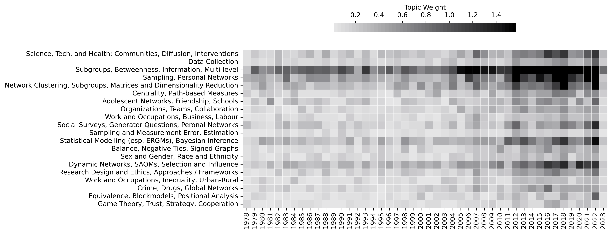

13 Networks as Data
- Explain how social network analysis and relational thinking differs from approaches to quantitative social science that examine associations between attributes of statistically independent individuals
- Differentiate between four common ways of conceptualizing social networks
- affective ties / patterns of sentiments
- access and opportunity structures
- structures of durable role relations
- behavioural interactions
- Compare different ways of representing relationships in network data (e.g. directed or undirected, signed or unsigned)
- Work with relational data in the form of edgelists and NetworkX graph objects
- Explain what walks, trails, paths, and cycles are
In this chapter and the next, we shift our focus from text analysis to network analysis. We will start with a conceptual and practical foundation for the methods and models introduced in later chapters.
This chapter is organized into three main sections. The first clarifies what social networks are and why they matter. We’ll start by discussing how structural and relational thinking differentiates network analysis from the predominant focus on attributes of statistically independent individuals in much of traditional quantitative social science. We will briefly discuss some prominent perspectives about what networks are and why they matter. This sets the stage for comparing common ways of conceptualizing social networks, including: as patterns of (i) sentiments, (ii) access and opportunity structures, (iii) socially constructed role relations, and (iv) behavioural interactions (Kitts 2014; Kitts and Quintane 2020). These ways of thinking about networks have important implications for the questions, data, theory, methods and models we will use.
- TODO: Update the code in this chapter to include graph-tool implementations. Best solution would likely be to do this in Quarto tabs. Update: Instead I’ve added a section on graph-tool with an example of visualizing the political blogs network from the FCIT 607 tutorials. The front end needs to be updated to reflect the new content, and the chapter needs a couple of passes to make sure it flows properly, etc.
The second section focuses on storing and working with network data. I describe some common ways researchers represent the complexity of real world network structures and processes using relational data structures, including edgelists, matrices, and attribute files. These data structures are capable of encoding a wide-variety of relational information and can be adapted to the specifics of your research projects. You will learn how to construct graph objects from these data structures using the NetworkX and graph-tool packages. The third section introduces the ideas of a network “walk-structure” (the chains of direct and indirect connections that link pairs of nodes in a network) and “contagions” flowing through network structure.
- TODO: Update this chapter overview to account for merges with other chapters.
The concepts introduced in this chapter are foundational to many methods and models in network analysis and will be referenced frequently in future chapters, so it is important to be familiar with them before tackling more complex methods and models.
- TODO: Cite the second edition of the handbook here, especially the introduction with John Scott and Peter Carrington (see ?fig-shsna2-topics).
Finally, before we dive in, I want to briefly acknowledge that network analysis is a massive interdisciplinary field with a history that is over 100 years old in the social sciences and several decades old in other sciences. While many of the foundational ideas endure, the theories, methods, measures, and models that define the field have transformed many times (see e.g., Freeman 2004) and are changing again with the adoption of new kinds of datasets and the creation and improvement of computationally-intensive models. As with all the other topics introduced in this book, it’s impossible to offer a comprehensive introduction to the field in just a few chapters, so I’ve had to make some very difficult decisions about what to emphasize. I’ve elected to focus on a number of foundational ideas and computational approaches to inferential network analysis in later chapters. I’ve set aside many topics that are fascinating and worthy, to keep this a general introduction to computational social science.
- TODO: Integrate and explain this figure.
{#fig-shsna2-topics}
13.2 WORKING WITH RELATIONAL DATA
With these generalities out of the way, let’s start getting into the details of working with relational data.
13.2.1 Edgelists and Nodelists
As I mentioned earlier, matrices are the heart of network analysis, but they are not ideal ways to enter, store, or manage network data for anything other than small networks. In contemporary practice, most network data is stored in the form of edgelists and nodelists. In Figure 13.3, the same relational data that is represented in the graph, and encoded in the adjacency matrix above, is encoded as an edgelist. The first two columns of the edgelist is where the relational data itself is stored. The columns are labelled source and target because the network is directed; the node in the source column sends an edge to the node in the target column.
While an edgelist only requires pairs of nodes, we can also include additional columns that provide data about the relationship. There is nothing special or unique about data that describes these edges except for the fact that they describe characteristics of the relationship between two entities rather than characteristics of the entities themselves. Just as we carefully specify variables for describing the attributes of entities, we can carefully specify variables for describing the attributes of relationships between entities. For example, we might have a variable that categorizes edges by the type of relationship (e.g., family, friend, foe, professional, romantic, people who dance together, people who do intravenous drugs with one another) or by it’s sentiment (positive, neural, negative), to suggest just a couple of possibilities. Just as we can with an adjacency matrix, we can record edge weight (such as interaction frequency) as a variable in the edgelist. In longitudinal or dynamic networks (discussed in later chapters), we might also record the wave that a relationship was observed in, or perhaps a timestamp of when the interaction occurred (e.g., when Chen sent an email to Anvita). It may be a simple point, but it’s very important to understand: we can record any empirical observations of the attributes of relationships. The same considerations about what to observe and record apply for edges as with nodes. There is nothing special about edge data except that it describes edges.
13.2.2 Graph Objects from Edgelists (and Matrices and More)
Let’s examine some actual data. In the code block below, we will import a couple of packages and load up some relational data collected from a group of French high school students in 2013. This dataset is one of several collected by the SocioPatterns research team (with collaborators the ISI Foundation in Turin, the Centre de Physique Théorique in Marseille, and Bitmanufactory in Cambridge). The particular dataset we will use describes a network of face-to-face contacts between high school students in Marseille over a five-day period in December 2013. This data was collected via contact diaries, in which students recorded who they came into contact with (restricted to other students in the study) and for how long. Similar data was also collected with wearable sensors, but we will just focus on the contact diaries for now.
The edge data is provided in a CSV file with three columns: i, j, and weight. Physical co-presence is, of course, naturally undirected. It is not possible to be physically co-present with someone who is not also physically co-present with you. Therefore, the edgelist names the columns with i and j instead of source and target. This also means that a tie from i to j is the same as a tie from j to i. Finally, edge weight data is stored in the weight column and is coded as follows:
weight= 1 ifiandjwere co-present for at most 5 minutesweight= 2 ifiandjwere co-present for 5-15 minutesweight= 3 ifiandjwere co-present for 15-60 minutesweight= 4 ifiandjwere co-present for more than 60 minutes
We can load this edge data in a Pandas dataframe and perform any necessary cleaning before reading the edge data into the NetworkX package to create a graph object that we can analyze using network methods.
- TODO: Swap this content out with the introductory graph-tool content from the FCIT 607 tutorial?
import matplotlib.pyplot as plt
import networkx as nx
import pandas as pd
import seaborn as sns
from dcss import set_style, download_dataset
set_style()download_dataset(
"https://www.dropbox.com/scl/fo/wbj6l2tyoc67o3vlonxp5/AERxFPRIhfgWG_MaVK_rjM4?rlkey=48x2taz2t5mru1j2ucjf670a8&st=e5qs5gw8&dl=0",
save_path="data/SocioPatterns/"
)contact_diaries = pd.read_csv("data/SocioPatterns/Contact-diaries-network_data_2013.csv", sep=' ')
contact_diaries.head()contact_diaries.info()All three columns in this data are numeric: the nodes in columns i and j are represented by numerical IDs rather than the names of the participants in the study. There are 502 rows in this edgelist, which means there are 502 observed edges.
We can import this weighted edgelist into the Python package NetworkX, which will transform our edge data into a graph object that we can analyze using methods and models from network analysis. NetworkX provides a number of useful functions for doing this. We’ll use from_pandas_edgelist() because our data is stored in an edgelist format in a pandas dataframe. When we construct the network G, we’ll provide NetworkX with the names of the columns that contain the IDs for each node in an edge. Any other columns in the dataframe will be treated as edge attribute data. Finally, we will also tell NetworkX that this is an undirected graph by passing the argument create_using=nx.Graph(). This tells NetworkX that, when it is creating the network, an edge from i to j is the same as an edge from j to i. If we were working with a directed network, we could pass the argument create_using=nx.DiGraph() instead.
G = nx.from_pandas_edgelist(contact_diaries, 'i', 'j', create_using=nx.Graph())
G.name = 'Reported Contacts (Diary Data)'
print(G)You might be wondering why the number of rows in the edgelist differs from the number of edges in the network object G. The reason is because different students report the same relation. i might say they spent between 15 and 30 minutes with j and j might later report the same contact with i. However, it seems that not all students reported all interactions (if they had, we would expect there to be 502 reports of 251 edges). Because we believe that students are more likely to forget to record an interaction than they are to fabricate one in their contact diary, we symmetrize the relationship, making it undirected (if i spent time with j, then the reverse must necessarily be true). We have informed NetworkX that this network should use undirected edges by specifying a Graph object rather than a DiGraph (directed graph).
Finally, before moving on, let’s create a quick visualization of this network (Figure 13.4). This is an inherently challenging task as networks are very high-dimensional objects and we are limited to 2 dimensions. It’s best not to rely on visualizations such as these for any serious analytic work, but for relatively small networks they can still be informative.
- TODO: Critique the visualization; hint that we will do better in a couple of chapters.
layout = nx.nx_pydot.graphviz_layout(G)fig, ax = plt.subplots(figsize=(12, 12))
nx.draw(G,
pos=layout,
node_color='gray',
edge_color='lightgray',
node_size=10,
width=.5)
plt.savefig('figures/13_04.png', dpi=300)You’ll see similar visualizations one in the coming chapters. Each time you’ll develop a deeper understanding of what to look for, such as clusters of densely connected nodes, or pendants hanging off a dense cluster of nodes at the core of a network. For now, let’s keep moving.
NetworkX has a variety of functions for reading network data stored in other formats as well, and you can find the one that works with the your data’s format by checking the documentation, which you can find at https://networkx.org/documentation/latest/. Some of the formats supported at the time of writing include edgelists and matrices stored in Python’s built in data structures (e.g., dictionaries) as well as numpy arrays and matrices, scipy matrices, and pandas dataframes. In addition to these edgelist and matrix data structures, NetworkX can also read and write network objects using file formats commonly used by other network analysis software, including graphml, GEXF, JSON, and Pajek files. Unless you are have a specific need for them, my recommendation is that you store your network data in the form of an edgelist and a nodelist in separate plain text CSV files.
Now it’s time to turn to some important building blocks of network analysis. We will start by briefly discussing the “walk-structure” of a network and the notion of network flow. This is intended to get you to start thinking about networks in a particular way in preparation for content that appears in the next chapter. We will then turn to some of the basic micro-level building blocks of network structure, dyads and triads. Together, these two final sections provide a foundation for much of what follows in later chapters.
13.3 WALK-STRUCTURE AND NETWORK FLOW
One of the most foundational ideas in social network analysis is that your position in a network affects your ability to access or shape the flow of things – such as resources, information, or knowledge – through that network. Those things are often called contagions, or social contagions, even when they are not literally contagious in the way an infectious disease is (and most contagions that social scientists are interested in do not spread like infectious diseases, as you will learn in Chapter 18). Depending on where a node is positioned in the network, they can control or otherwise manipulate how a contagion is flowing through a network. For example, they may prevent someone from learning about some important information by feeding them incorrect information or by betraying their trust and spilling their secrets to the rest of the office.
This notion of contagions flowing along the structure of a network enables disparate regions of that network to influence one another. In a friendship network, for example, we are influenced by our friends, by our friends’ friends, by our friends’ friends’ friends, and so on. But exactly how does that happen, and to what degree? Which of the many possible paths do contagions flow on? All of them at once? Some subset of paths? If so, which ones? Perhaps a single most optimal one?
13.3.1 Walks, Trails, Paths, and Cycles
Earlier I mentioned that we would spin up a fictitious story about our five person network (Chen, Patrick, Anika, Anvita, and Nate). We’ll do that now to help clarify some of the essential terminology, but we’ll start with a slightly smaller version – just Anika, Chen, and Patrick – and then add the others in.
Imagine a research lab with an upcoming team meeting with an ominous sounding item on the agenda. One member of the team, Chen, knows something about the context for this item and shares it with another member of the team, Patrick. In this scenario, Chen sends the information to Patrick (remember, this makes them adjacent).
As we’ve discussed, nodes are also linked to other nodes indirectly. Let’s say Chen’s information came from another team member, Anika. Anika and Patrick are not adjacent, but they are indirectly connected via Chen. How can we describe this relationship? And why does it matter whether we describe it at all?
In network analysis, we are often interested in whether something (e.g., information about the ominous sounding agenda item) can travel from node \(i\) (e.g., Anika) to node \(j\) (e.g., Patrick). If it is indeed possible for that to happen, how many people would it have to go through to get there? And is there more than one way it might get there? If so, are some ways more efficient than others? If so, which ones? We can answer questions such as these about any nodes in a network by invoking the concept of a walk, which also provides both general and specific terminology for describing a wide variety of indirect relationships (Borgatti and Everett 2020). Consider, the hypothetical network in Figure 13.5, which we just described with words.
A walk is simply any sequence of adjacent nodes and edges that start with some node and end with a node. They can even start and end with the same node. In fact, the same node can appear in a walk more than once, and so can the same edges! In short, a walk is a very general way of describing any way that you can go from one node to another by “walking” along the edges, even if what you want to do is get back to where you started. There are no restrictions provided the edges to walk on actually exist (or rather, are observed). This opens all kinds of useful ways of thinking about the distances between nodes, operationalized in terms of lengths of walks, which is defined in terms of the number of edges contained in the walk. In the above network, the walk from Anika to Patrick passes through 1 node, Chen, but has a length of 2 because it consists of the relationship between Anika and Chen, and between Chen and Patrick (2 edges).
Let’s complicate this just a wee bit by introducing a few additional team members, our fictitious friends Anvita and Nate. Chen, especially anxious about the ominous agenda item, shares the information with Anvita and Nate. Anvita doesn’t know Patrick already knows, so shares the information with Patrick. Patrick doesn’t know the information ultimately came from Anika, so sends the information back to Anika. Nate prefers not to pass the information along because they aren’t sure how credible it really is. Figure 13.6 shows the structure of this network with the new information sharing relations. Note that you can’t read this representation left to right! The information flow process started with Anika in this hypothetical example.
Our initial walk from Anika to Patrick still exists, of course, but now we also have the possibility of many other walks. Anika to Chen to Nate is a walk. Anika to Chen to Anvita to Patrick and back to Anika is a walk. More specifically it is a closed walk because it starts and ends with the same node: Anika.
In empirical networks, the number of possible walks between any pair of nodes can be vast, but we can impose some order by grouping them into different kinds of walks, such as trails, paths, and cycles. A trail is type of walk where edges are not allowed to repeat themselves. For example, Anika to Chen to Anvita to Patrick to Anika is a trail but the exact same walk would not be a trail if we included another step to Chen (as that would be repeating an edge). The length of a trail is equal to the number of edges contained in the trail, which in the example above would be 4. A path is a type of walk where nodes are not allowed to be repeated. That means that the trail from Anika to Chen to Anvita to Patrick to Anika is not a path, because Anika is repeated twice, but Anika to Chen to Anvita to Patrick is. As with trails, the length of a path is equal to the number of edges it contains. Finally, cycles are types of closed walks that (a) involve a minimum of three nodes where the only node that is repeated is the node that starts and ends the walk, and (b) no edges are repeated. There are many other specific types of walks that we will not discuss here. For directed networks, the three-node minimum may be relaxed if you have two nodes that send an edge to each other. This is sometimes called a trivial cycle and its status as a cycle or not should depend on why you care about cycles.
All of these examples are walks. Some of those walks are trails, and some of those trails are paths and others are cycles. If there is a path between two nodes, say between Anika and Nate, then we say that those two are reachable.
In connected networks, there are typically many possible paths that connect any given pair of nodes in a network, but they are not all equally efficient. While information and other resources can certainly travel through a network via inefficient routes, the likelihood of actually going the distance is much greater when traveling on efficient paths. For that reason, we are commonly interested in focusing on the shortest paths between nodes. We will spend a good amount of time in the next chapter discussing shortest paths, followed by a discussion of some alternative assumptions about how contagions flow in a network.
We will leave our discussion of walk-structures for now. The key thing to emphasize right now is the general logic of traversing a social network this way, and to understand that the structure of the network affects the flow of contagions through it, meaning people in the network will be differentially exposed to those contagions, good or bad. We will return to this issue in the next chapter. For now, let’s turn to the some micro building blocks of network structure.
13.4 CONCLUSION
13.4.1 Key Points
- Relational thinking provides new, different, and valuable ways of approaching social science
- Different types of ties change how we should think about a network
- Learned how to work with network files and datatypes in NetworkX
- Discussed walks, paths, cycles, trails: ways of describing how things can move or traverse through a network